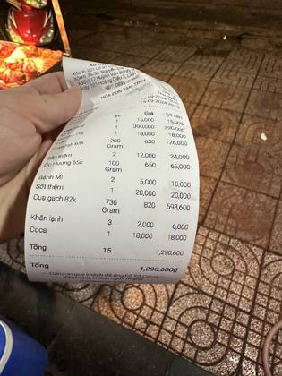

Vietnam
10 restaurants · 56 photos
NZ/AU ? The Cajun CuaHo Chi Minh City · 8NZ/AU ?
The Cajun CuaHo Chi Minh City · 8NZ/AU ? The Crab Shack SaigonQuan Ba · 6NZ/AU ?
The Crab Shack SaigonQuan Ba · 6NZ/AU ? CAJUN BoilSon Tra · 6NZ/AU ?
CAJUN BoilSon Tra · 6NZ/AU ? CAJUN - Ẩm thực MỹSon Tra · 6NZ/AU ?
CAJUN - Ẩm thực MỹSon Tra · 6NZ/AU ? Xô hải sản sốt CajunQuan Bon · 6NZ/AU ?
Xô hải sản sốt CajunQuan Bon · 6NZ/AU ? Captain Crawfish RestaurantHoan Kiem · 6NZ/AU ?
Captain Crawfish RestaurantHoan Kiem · 6NZ/AU ? Mr Tom American Cajun SeafoodHai BaTrung · 4NZ/AU ?
Mr Tom American Cajun SeafoodHai BaTrung · 4NZ/AU ? Tôm hùm Baby và Crawfish sốt Cajun Tân Sơn NhìQuan Tan Phu · 4NZ/AU ?
Tôm hùm Baby và Crawfish sốt Cajun Tân Sơn NhìQuan Tan Phu · 4NZ/AU ? LEN CAJUNQuan Binh Thanh · 4
LEN CAJUNQuan Binh Thanh · 4
The Cajun CuaHo Chi Minh City · 8NZ/AU ?The Crab Shack SaigonQuan Ba · 6NZ/AU ?CAJUN BoilSon Tra · 6NZ/AU ?CAJUN - Ẩm thực MỹSon Tra · 6NZ/AU ?Xô hải sản sốt CajunQuan Bon · 6NZ/AU ?
Xô CajunQuan Binh Thanh · 6NZ/AU ?Captain Crawfish RestaurantHoan Kiem · 6NZ/AU ?Mr Tom American Cajun SeafoodHai BaTrung · 4NZ/AU ?Tôm hùm Baby và Crawfish sốt Cajun Tân Sơn NhìQuan Tan Phu · 4NZ/AU ?LEN CAJUNQuan Binh Thanh · 4Every boil listing found · 17
Google Maps listings whose name says boil / crawfish / Cajun / crab etc. Swept 20 Oct 2026. Not all verified as bag boils; tap to open the listing.
Da Nang · 1
- CAJUN Boil Da Nang, 131A Lý Tự Trọng · ★4.7 (215)
Hai BaTrung · 1
- Mr Tom American - Hải Sản Cajun Hai BaTrung, Ngõ 48 Đường Tại Quang Bửu · ★4.7 (279)
Hoan Kiem · 1
- Captain Crawfish Restaurant Hoan Kiem, 19 P. Lương Ngọc Quyến · ★4.0 (41)
Quan Ba · 3
- Hải Sản Sốt Cajun Mr Po Quan Ba, Closes 11:30 PM
- The Cajun Cua Quan Ba, 267 Lý Tự Trọng · ★4.6 (1,777)
- The Crab Shack Tu Xuong Quan Ba, 61B Tú Xương · ★4.9 (4,356)
Quan Binh Thanh · 2
- LEN CAJUN - HẢI SẢN XỐT CAJUN Quan Binh Thanh, 886/33 Xô Viết Nghệ Tĩnh · ★4.8 (43)
- Xô Cajun - 36/3A Nguyễn Gia Trí, P25, BT Quan Binh Thanh, 36/3A Nguyễn Gia Trí · ★4.6 (402)
Quan Bon · 3
- The Crab Shack Central Quan Bon, 84 Ký Con · ★5.0 (1,180)
- The Kickin' Crab Vietnam Quan Bon
- Xô hải sản sốt Cajun Quan Bon, Lô B1 chung cư · ★4.5 (522)
Quan Hai · 1
- The Crab Shack Thao Dien Quan Hai, 14 Lê Văn Miến · ★4.9 (2,344)
Quan Phu Nhuan · 1
- Xô Cajun - 317 Huỳnh Văn Bánh, P.11, Phú Nhuận (Chỉ bán mang đi) Quan Phu Nhuan, 317 Huỳnh Văn Bánh · ★4.9 (128)
Quan Tan Phu · 1
- Tôm hùm Baby và Crawfish sốt Cajun Tân Sơn Nhì Quan Tan Phu, 34 Tân Sơn Nhì · ★4.8 (81)
Son Tra · 2
- CAJUN - Ẩm thực Mỹ Son Tra, K 18/17 Nguyễn Văn Thoại · ★4.9 (559)
- CAJUN Boil Son Tra, 5 An Thượng 5 · ★4.8 (621)
Thu Duc · 1
- Xô Cajun - 101 Hoàng Diệu 2, Linh Trung, Thủ Đức Thu Duc, 101 Đ. Hoàng Diệu 2 · ★4.4 (80)